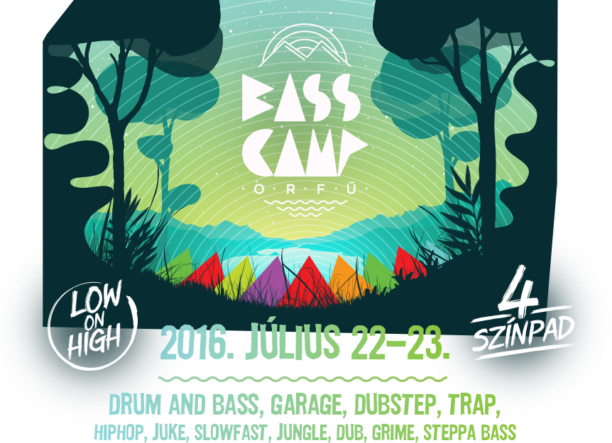
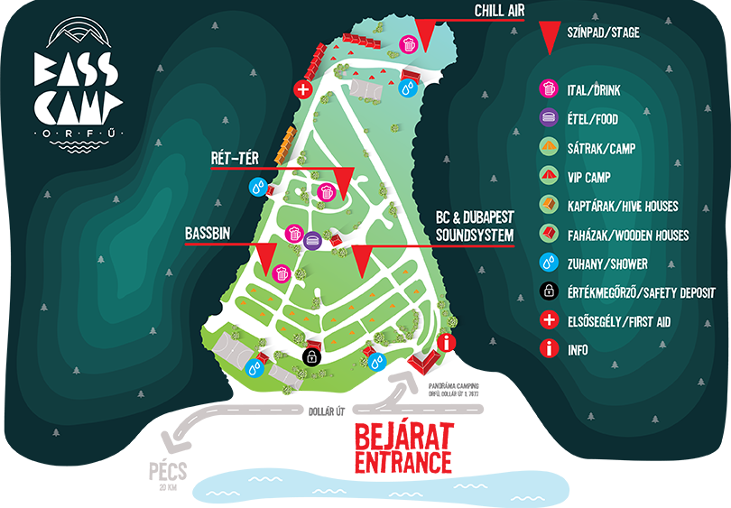

<!DOCTYPE html>
<html lang="en">
  <head>
    <meta charset="utf-8">
    <meta http-equiv="X-UA-Compatible" content="IE=edge">
    <meta name="viewport" content="width=device-width, initial-scale=1">

    <title>BASS CAMP Orf&#251; 2016</title>
   <link rel="shortcut icon" href="favicon.ico" type="image/x-icon">
   <link rel="icon" href="favicon.ico" type="image/x-icon">
	
    <!-- Bootstrap -->
    <link href="css/bootstrap.min.css" rel="stylesheet">
    <link href="css/app.css" rel="stylesheet">

    <!-- HTML5 shim and Respond.js for IE8 support of HTML5 elements and media queries -->
    <!-- WARNING: Respond.js doesn't work if you view the page via file:// -->
    <!--[if lt IE 9]>
      <script src="https://oss.maxcdn.com/html5shiv/3.7.2/html5shiv.min.js"></script>
      <script src="https://oss.maxcdn.com/respond/1.4.2/respond.min.js"></script>
    <![endif]-->
  </head>
  <body>
  	<nav class="navbar navbar-default navbar-fixed-top navbar-color">
  		<div class="container nav-pad">
  			<div class="col-md-12 col-sm-12 col-xs-12">
  				<ul class="nav navbar-nav" id="navigator">
	  				<li><a href="#locations">program</a></li>
	  				<li class="dot">&#8226;</li>	
	  				<li><a href="#map">info</a></li>
	  				<li class="dot">&#8226;</li>
	  				<li><a href="#tickets">jegy</a></li>
	  				<li class="dot">&#8226;</li>
	  				<li><a href="https://www.mixcloud.com/orfubasscamp/" target="_blank">podcast</a></li>
	  				<li class="dot">&#8226;</li>
	  				<li><a href="https://www.instagram.com/basscamporfu/" target="_blank">galéria</a></li>
	  				<li class="dot">&#8226;</li>
	  			</ul>
  			</div>
  		</div>
	</nav>
    <div class="container">
    	<div class="row">
    		<div class="col-md-12 col-sm-12 col-xs-12 text-centerer">
    			<header>
	    			
	    			
	    			
    			</header>
    			<section id="lineup">
    				<span class="size25">Commix (UK) • Dappa AKA Dusty Fingaz (UK) • Moresounds Live (FR) • Jade • Mc Mike Romeo (UK)<br />
 Scar (UK)  • Splash Heads (srb) • Lux Familiar (pl) • Bad Mojo (sk) Dj Mocity (IQ) • Shell Sport (US)</span><br /><span class="size22"> Ba10 • Bergi • Bootsie • Cadik • Czynky • Darth Péter • Dj Slow • Dubapest Hifi • C0p • Fegz • Shake Won Too • Minek<br /> Solarcube feat. Sense • Spinline • Dubphase Sound System • Fedora • Foka • Longman • Markov • Mentalien • Palotai • Vanis <br /> Vida L • Passed Dj Set • Ren •  Rob • Savage & Mc Fantom • Sirmo • SKC • Slanki • SoulClap Budapest • Spytech & Endor <br /> Turner • Waxman • Zomblaze • Zosha • Mheola</span><br /><span class="size20">
Acid • Aouzzi • Benzon • Blasius • B0C • Ddhd • Drajmi • DTR • Feryne • Garpo • Szab 
 Lada • Max Factor • Mill • Nipli • Nnothing • Norm • Odum live • Retek • Rol&  <br /> Ron • Shop • SixSix • Rabbit
 Skrude • Stormy Lee • Suhov • Szovjet • Widosub • MC Babystep • Biggiebwoy • Banyek • Blasius • DJ Run • Perrin • Mc Rya <br /> Funky Beatz • T10 • Val • Vibes<br />
További info: <a href="https://www.facebook.com/events/510092759191751/" target="_blank">facebook/Bass Camp Orf&#251;</a></span>
    			</section>
    			<section id="locations"> 
	    		
    			<div class="locations-head">
    				
    			</div>
    			
	    			<div id="location-list">
	    				<ul class="nav nav-pills" role="tablist">
		    				<li role="presentation" class="active"><a href="#ret-ter" aria-controls="ret-ter" role="tab" data-toggle="tab">Rét-tér</a></li>
		    				<li class="dot">&#8226;</li>
		    				<li role="presentation"><a href="#bassbin" aria-controls="bassbin" role="tab" data-toggle="tab">Bassbin</a></li>
		    				<li class="dot">&#8226;</li>
		    				<li role="presentation"><a href="#soundsystems" aria-controls="soundsystems" role="tab" data-toggle="tab">BC & Dubapest Soundsystem</a></li>
		    				<li class="dot">&#8226;</li>
		    				<li role="presentation"><a href="#chill-air" aria-controls="chill-air" role="tab" data-toggle="tab">Chill air</a></li>
		    				<li class="dot">&#8226;</li>
		    				<li role="presentation"><a href="#daytime" aria-controls="daytime" role="tab" data-toggle="tab">Daytime</a></li>
	    				</ul>
	    			</div>
	    			<div class="tab-content">
						<div role="tabpanel" class="tab-pane active" id="ret-ter">
								
								
								<div class="table-container">
								<table class="table-condensed">
									<thead>
										<tr>
											<th colspan="3"></th>
											<th colspan="3"></th>
										</tr>
									</thead>
									<tbody>
										<tr>
											<td></td><td></td><td></td><td class="td-left">MC</td><td>&#8226;</td><td class="td-right">Mike Romeo</td>
										</tr>
										<tr>
											<td class="td-left">15:00</td><td>&#8226;</td><td class="td-right">Zonk</td><td class="td-left">14:30</td><td>&#8226;</td><td class="td-right">Widosub</td>
										</tr>
										<tr>
											<td class="td-left">16:00</td><td>&#8226;</td><td class="td-right">Endor(&Spytech)</td><td class="td-left">15:30</td><td>&#8226;</td><td class="td-right">Lada</td>
										</tr>
										<tr>	
											<td class="td-left">17:00</td><td>&#8226;</td><td class="td-right">Konor</td><td class="td-left">16:30</td><td>&#8226;</td><td class="td-right">Rob</td>
										</tr>
										<tr>	
											<td class="td-left">18:00</td><td>&#8226;</td><td class="td-right">Rabbit</td><td class="td-left">17:30</td><td>&#8226;</td><td class="td-right">Rol&</td>
										</tr>
										<tr>	
											<td class="td-left">19:00</td><td>&#8226;</td><td class="td-right">Spinline</td><td class="td-left">18:30</td><td>&#8226;</td><td class="td-right">Vida L</td>
										</tr>	
										<tr>	
											<td class="td-left">20:00</td><td>&#8226;</td><td class="td-right">Spytech(&Endor)</td><td class="td-left">19:30</td><td>&#8226;</td><td class="td-right">Longman</td>
										</tr>	
										<tr>	
											<td class="td-left">21:00</td><td>&#8226;</td><td class="td-right">Scar (UK)</td><td class="td-left">20:30</td><td>&#8226;</td><td class="td-right">Markov</td>
										</tr>	
										<tr>	
											<td class="td-left">22:30</td><td>&#8226;</td><td class="td-right">Splash Heads (SRB)</td><td class="td-left">21:30</td><td>&#8226;</td><td class="td-right">Skc</td>
										</tr>	
										<tr>	
											<td class="td-left">00:00</td><td>&#8226;</td><td class="td-right">Jade</td><td class="td-left">22:30</td><td>&#8226;</td><td class="td-right">Ren</td>
										</tr>	
										<tr>	
											<td class="td-left">1:30</td><td>&#8226;</td><td class="td-right">Savage+Fantom</td><td class="td-left">23:30</td><td>&#8226;</td><td class="td-right">Commix (UK)</td>
										</tr>	
										<tr>	
											<td class="td-left">2:30 </td><td>&#8226;</td><td class="td-right">Norm</td><td class="td-left">1:30</td><td>&#8226;</td><td class="td-right">Mentalien</td>
										</tr>	
										<tr>	
											<td class="td-left">3:30</td><td>&#8226;</td><td class="td-right">Stormy Lee</td><td class="td-left">2:30</td><td>&#8226;</td><td class="td-right">Ron</td>
										</tr>	
										<tr>	
											<td class="td-left">4:30</td><td>&#8226;</td><td class="td-right">Blasius</td><td class="td-left">3:30</td><td>&#8226;</td><td class="td-right">Solar Cube feat Sense</td>
										</tr>
										<tr>
											<td></td><td></td><td></td><td class="td-left">4:30</td><td>&#8226;</td><td class="td-right">Darth Péter</td>
										</tr>										
									</tbody>
								</table>
								</div>
						</div>
						<div role="tabpanel" class="tab-pane" id="bassbin">
							
							
							<div class="table-container">	
								<table class="table-condensed">
								<thead>
									<tr>
										<th colspan="3"></th>
										<th colspan="3"></th>
									</tr>
								</thead>
								<tbody>
									<tr>
										<td></td><td></td><td></td><td class="td-left">MC</td><td>&#8226;</td><td class="td-right">Fedora</td>
									</tr>
									<tr>	
										<td class="td-left">14:30</td><td>&#8226;</td><td class="td-right">Nnothing</td><td class="td-left">14:30</td><td>&#8226;</td><td class="td-right">acid</td>
									</tr>
									<tr>
										<td class="td-left">15:30</td><td>&#8226;</td><td class="td-right">Dj Run</td><td class="td-left">15:30</td><td>&#8226;</td><td class="td-right">Foka</td>
									</tr>
									<tr>
										<td class="td-left">16:30</td><td>&#8226;</td><td class="td-right">Passed dj set</td><td class="td-left">16:30</td><td>&#8226;</td><td class="td-right">Ba10</td>
									</tr>
									<tr>
										<td class="td-left">17:30</td><td>&#8226;</td><td class="td-right">Shake Won Too</td><td class="td-left">17:30</td><td>&#8226;</td><td class="td-right">Waxman</td>
									</tr>
									<tr>
										<td class="td-left">18:30</td><td>&#8226;</td><td class="td-right">Bootsie</td><td class="td-left">18:30</td><td>&#8226;</td><td class="td-right">Mentalien</td>
									</tr>
									<tr>
										<td class="td-left">19:30</td><td>&#8226;</td><td class="td-right">c0p</td><td class="td-left">19:30</td><td>&#8226;</td><td class="td-right">Bergi</td>
									</tr>
									<tr>
										<td class="td-left">20:30</td><td>&#8226;</td><td class="td-right">Cadik</td><td class="td-left">20:30</td><td>&#8226;</td><td class="td-right">Sirmo</td>
									</tr>
									<tr>
										<td class="td-left">22:00</td><td>&#8226;</td><td class="td-right">Moresounds (FR)</td><td class="td-left">21:30</td><td>&#8226;</td><td class="td-right">Dappa (UK)</td>
									</tr>
									<tr>
										<td class="td-left">23:00</td><td>&#8226;</td><td class="td-right">Zomblaze & Planet Malcolm</td><td class="td-left">23:30</td><td>&#8226;</td><td class="td-right">Palotai</td>
									</tr>
									<tr>
										<td class="td-left">00:30</td><td>&#8226;</td><td class="td-right">Mheola</td><td class="td-left">00:30</td><td>&#8226;</td><td class="td-right">Bad Mojo (SK)</td>
									</tr>
									<tr>
										<td class="td-left">01:30</td><td>&#8226;</td><td class="td-right">Szab</td><td class="td-left">01:30</td><td>&#8226;</td><td class="td-right">ddhd</td>
									</tr>	
									<tr>
										<td></td><td></td><td></td><td class="td-left">02:30</td><td>&#8226;</td><td class="td-right">B0c</td>
									</tr>
								</tbody>
								</table>
							</div>
	
						</div>
						<div role="tabpanel" class="tab-pane" id="soundsystems">
							
							
							<div class="table-container">
								<table class="table-condensed">
									<thead>
										<tr>
											<th colspan="3"></th>
											<th colspan="3"></th>
										</tr>
									</thead>
									<tbody>
										<tr>
											<td class="td-left">mc/host</td><td>&#8226;</td><td class="td-right">Baby Step</td><td class="td-left">host</td><td>&#8226;</td><td class="td-right">Baby Step</td>
										</tr>
										<tr>
											<td class="td-left">14:00</td><td>&#8226;</td><td class="td-right">Dubapest Hifi</td><td class="td-left">14:00</td><td>&#8226;</td><td class="td-right">Banyek live</td>
										</tr>
										<tr>
											<td class="td-left">16:00</td><td>&#8226;</td><td class="td-right">Shop</td><td class="td-left">15:10</td><td>&#8226;</td><td class="td-right">Dubapest Hifi</td>
										</tr>
										<tr>
											<td class="td-left">17:00</td><td>&#8226;</td><td class="td-right">Longman</td><td class="td-left">16:00</td><td>&#8226;</td><td class="td-right">DTR</td>
										</tr>
										<tr>
											<td class="td-left">18:00</td><td>&#8226;</td><td class="td-right">Zosha</td><td class="td-left">17:00</td><td>&#8226;</td><td class="td-right">Ret3k</td>
										</tr>
										<tr>
											<td class="td-left">19:00</td><td>&#8226;</td><td class="td-right">Dj Ren (bp juke)</td><td class="td-left">18:00</td><td>&#8226;</td><td class="td-right">Dubapest Hifi</td>
										</tr>
										<tr>
											<td class="td-left">20:00</td><td>&#8226;</td><td class="td-right">Ao uzzi (bp juke)</td><td class="td-left">19:00</td><td>&#8226;</td><td class="td-right">Cadik</td>
										</tr>
										<tr>
											<td class="td-left">21:00</td><td>&#8226;</td><td class="td-right">Lux Familiar (PL)</td><td class="td-left">20:00</td><td>&#8226;</td><td class="td-right">Vanis</td>
										</tr>
										<tr>			
											<td class="td-left">22:00</td><td>&#8226;</td><td class="td-right">Dubphase</td><td class="td-left">21:00</td><td>&#8226;</td><td class="td-right">Perrin</td>
										</tr>
										<tr>
											<td class="td-left">00:00</td><td>&#8226;</td><td class="td-right">Dubapest Hifi</td><td class="td-left">22:00</td><td>&#8226;</td><td class="td-right">Slanki</td>
										</tr>
										<tr>
											<td></td><td></td><td></td><td class="td-left">23:00</td><td>&#8226;</td><td class="td-right">SixSix</td>
										</tr>
										<tr>
											<td></td><td></td><td></td><td class="td-left">00:00</td><td>&#8226;</td><td class="td-right">SHELL SPORT (usa)</td>
										</tr>
										<tr>
											<td></td><td></td><td></td><td class="td-left">01:00</td><td>&#8226;</td><td class="td-right">Dubapest Hifi</td>
										</tr>
									</tbody>
								</table>
							</div>
						</div>
						<div role="tabpanel" class="tab-pane" id="chill-air">
							
							
							<div class="table-container">
							<table class="table-condensed">
								<thead>
									<tr>
										<th colspan="3"></th>
										<th colspan="3"></th>
									</tr>
								</thead>
								<tbody>
									<tr>
										<td class="td-left">14:00</td><td>&#8226;</td><td class="td-right">Val</td><td class="td-left">14:00</td><td>&#8226;</td><td class="td-right">Feryne</td>
									</tr>
									<tr>
										<td class="td-left">15:00</td><td>&#8226;</td><td class="td-right">T10</td><td class="td-left">15:45</td><td>&#8226;</td><td class="td-right">Max Factor</td>
									</tr>
							<tr>
										<td class="td-left">16:00</td><td>&#8226;</td><td class="td-right">Funky Beatz (Air-D, B-Ware, Arno)</td><td class="td-left">17:30</td><td>&#8226;</td><td class="td-right">D.Rajmi Live</td>
									</tr>
							<tr>
										<td class="td-left">18:00</td><td>&#8226;</td><td class="td-right">Fegz</td><td class="td-left">19:00</td><td>&#8226;</td><td class="td-right">Nipli</td>
									</tr>
							<tr>
										<td class="td-left">19:00</td><td>&#8226;</td><td class="td-right">Turner</td><td class="td-left">21:00</td><td>&#8226;</td><td class="td-right">Benzon</td>
									</tr>
							<tr>
										<td class="td-left">20:00</td><td>&#8226;</td><td class="td-right">Dj MoCity (IQ)</td><td class="td-left">23:00</td><td>&#8226;</td><td class="td-right">Garpo Live</td>
									</tr>
							<tr>
										<td class="td-left">22:00</td><td>&#8226;</td><td class="td-right">Soulclap Budapest</td><td class="td-left">00:30</td><td>&#8226;</td><td class="td-right">Odum Live</td>
									</tr>
							<tr>
										<td class="td-left">00:00</td><td>&#8226;</td><td class="td-right">Dj Slow live act</td><td class="td-left">02:00</td><td>&#8226;</td><td class="td-right">Mill b2b Zapphire</td>
									</tr>
							<tr>
										<td class="td-left">01:00</td><td>&#8226;</td><td class="td-right">Suhov</td><td class="td-left">04:00</td><td>&#8226;</td><td class="td-right">Minek</td>
									</tr>
							<tr>
										<td class="td-left">03:00</td><td>&#8226;</td><td class="td-right">Vibes (Zefil, Zsigabá, Error, Shop, Foka, Bandit, Biggiebwoy)</td><td></td><td></td><td></td>
							</tr>
							</tbody>
							</table>
							</div>
						</div>
						<div role="tabpanel" class="tab-pane" id="daytime">
							
							
							<div class="table-container">
								<ul class="list-unstyled" id="daytime-navigation">
									<li>
										<a href="#funzine">Funzine fejtágító</a>
									</li>
									<li class="small-white-dot">&#8226;</li>
									<li>		
										<a href="#felnott">BC „Feln&#245;ttmeg&#245;rz&#245;”</a>
									</li>
									<li class="small-white-dot">&#8226;</li>
									<li>
										<a href="#lemezborze">Lemezbörze</a>
									</li>
									<li class="small-white-dot">&#8226;</li>
									<li>
										<a href="#tours">Szervezett túrák</a>
									</li>
									<li class="small-white-dot">&#8226;</li>
									<li>
										<a href="#vj">VJ Yourself</a>
									</li>
									<li class="small-white-dot">&#8226;</li>
									<li>
										<a href="#footwork">BC Footwork táncverseny</a>
									</li>
									<li class="small-white-dot">&#8226;</li>
									<li>
										<a href="#civil">Civil Szervezetek programjai</a>
									</li>
									<li class="small-white-dot">&#8226;</li>
									<li>
										<a href="#orfu">Orf&#251;i programok</a>
									</li>
								</ul>
							</div>	
						</div>
	    			</div>
    			</section>
    			
    			<section id="map" class="">
    				
    				<a href="assets/BASS_CAMP_MAP.pdf" target="_blank" class="map-link center-block"></a>
    				
    				<div class="map-text">
	    				
	    					<h2>Szolgáltatások</h2>
	    					<p> büfé, meleg étel, ital, zuhanyzó és wc, értékmeg&#245;rz&#245;, els&#245;segély<br />
							Merch: bass camp-es portéka az Infopultnál.</p>
							
							
							<h2>Szállás</h2> 
							<p>
										
								<h4>Sátor</h4>
								A kempingben b&#245;ven van sátorhely. Szükséges hozzá egy érvényes sátorjegy.<br /><br /><br />
									
									
								<h4><a href="https://www.facebook.com/638250779673365/photos/pcb.653593644805745/653593158139127/?type=3&theater" target="_blank" >Kaptár</a> / <a href="https://www.facebook.com/638250779673365/photos/pcb.653593644805745/653593108139132/?type=3&theater" target="_blank" >Faház</a></h4>
									
								Kaptár / Faház foglalás: kérjük foglalás esetén keressetek meg minket a következ&#245; e-mail címen: <a href="mailto://basscamp@basscamp.hu">basscamp@basscamp.hu</a>
								Ha mégsem ezt választanád, itt keress szállást: <a href="http://orfu.hu/szallasok/" target="_blank">http://orfu.hu/szallasok/</a>
							</p>
							
							
							<h2>Ajánlott megközelítés</h2>
								<p>
								A fesztivál helyszíne: <a href="https://www.google.hu/maps/place/Panor%C3%A1ma+Camping/@46.1462427,18.1382002,15z/data=!4m5!3m4!1s0x0:0x7a4832f49a0be988!8m2!3d46.1462427!4d18.1382002" target="_blank">Orfű, Panoráma Camping (Dollár út 1.)</a><br /><br />	 
 
								<h4>Menetrend szerinti buszjáratok</h4>
 
								07.22.<br />
								Pécs autóbuszállomás – Orfű, Camping bejárati út:11:30, 12:30, 14:30, 15:30, 16:00, 17:00, 17:45, 19:00, 22:30 <br />
								Pécs autóbuszállomás – Orfű, Camping: 8:30, 9:30, 10:30, 11:30, 12:30, 14:30, 15:30, 16:30, 17:00, 17:45, 19:00<br /><br />
								
								
								07.23.<br />
								Pécs autóbuszállomás – Orfű, Camping bejárati út: 9:30, 10:30, 11:30, 12:30, 14:00, 14:30, 15:30, 16:00, 16:30, 17:00, 17:45, 19:00 <br />
								Pécs autóbuszállomás – Orfű, Camping: 9:30, 10:30, 11:30, 12:30, 14:30, 15:30, 16:30, 17:00, 17:45, 19:00<br /><br />
								
								
								07.22., 07.23., 07.24.<br />
								Orfű, Camping:  – Pécs Autóbuszállomás: 9:46, 10:36, 12:36, 15:36, 16:36, 18:06, 19:01<br />
 
								<h4>Bass Camp Taxi</h4>

								<b>Fix tarifák a Orfűről a Panoráma Kempingtől</b>
								<b>Pécsre:</b><br /> 
								Vasútállomás: 5500Ft<br />
								Konzum: 6000Ft<br /><br />
								
								<b>Orfűn belül:</b><br />
								Széchenyi tér: 1500Ft<br />
								C szektor: 1500Ft<br />
								Tekeres kis strand: 1500Ft <br /><br />
								
								Telefonszámok: +3630/5291193, +3630/6356002, +3630/9474575, +3630/8799987, +3620/2839928, +3620/5723839, +3670/5402820, +3670/ 2331555, +3670/3675988, +3630/9792510. <br /><br />
								
								
								
								
								
								Az autóval érkez&#245;k részére parkolóhely nem biztosított. A környékbeli parkolóhelyek ingyenesen 
								használhatók. Kérjük a rendezvény bejáratát hagyjátok szabadon, a bejárat közelében maximum csak 
								pár perces kipakolásra álljatok meg autóval.<br /><br />
							ATM és dohánybolt a kemping területén nem található.<br /><br />
							Kérjük, ismerkedj meg a <a href="assets/hazirend.pdf" target="_blank">Házirenddel</a> és a rendezvény alatt tartsd be azt.</p>
							
							<h2>Nappali programlehet&#245;ségek</h2>
								<p>
									<h3 id="funzine">FUNZINE FEJTÁGÍTÓ  el&#245;adó sátor </h3>
									<small>Szombat</small><br />
									<h4>Kovács Balázs: Elektronikus zene és társadalmi aktivizmus c. előadása</h4>
									„Röviden vagy hosszan beszélek arról, hogy a zene általában hogyan működik együtt
szociális környezetével, aztán néhány történeti példán keresztül az elektronikus zene izolált jellegét mutatom be, mígnem valahogy az aktivista-önszerveződő mozgalmak találkoznak vele.”<br /><br />
									<h4>Bencsik Gábor: Bemutatkozik a PTE-MK Elektronikus zenei szaka</h4>
									Bemutatkoznak a PTE-MK Elektronikus zenei szakon készült hangeszközök Bencsik Gábor egyetemi hallgató vezetésével.<br /><br />
									
									<h4>Hargitai András: A „Drum and Bass és a Dub"</h4>
									A dub zene formáinak megismerése modern analóg elektronikus hangszereken Hargitai András „Banyek” kalauzolásában.<br /><br />
									<h4>Basszus alkímia, avagy a zeneírás workflow-ja</h4>
									Producerek beszélnek élményeikről, tapasztalataikról a zeneírással kapcsolatban. Kérdezni ér. előadó: Zomblaze, További infók hamarosan.<br /><br />				
									<h3 id="felnott">BC „Feln&#245;ttmeg&#245;rz&#245;” </h3>
									<small>Szombat</small><br />
									A <b>Bass Camp</b>, a pécsi <b>Kortárs Ellátó Egyesület</b> és a budapesti <b>Gibbon Slackline</b> csapatával közös nappali programjaink:<br /><br />
									<div class="daytime-activity-info">
									<ul style="list-unstyled">		
										<li>-	Kreatív programokkal, ahol egyedi hűtő mágnest, vagy kitűzőt, ékszert és újrahasznosított tárgyakat készíthetsz magadnak, festhetsz vagy színezhetsz kedvedre</li>
										<li>-	Sportosabban töltenéd a napot? A bátrabbak kipróbálhatják a Slackline-t, vagy az Alpesi kispályás focit, de lesz még tollas, petangue, és pin-pong is.</li>
									</ul>
									</div>
									<h3 id="lemezborze">Lemezbörze</h3>
									<small>Szombat 12:00 - 18:00</small><br />
									Lemez cserebere lehetőség mindenkinek, akinek túl kevés, vagy túl sok lemeze van otthon, szerezne még, vagy megválna tőle. Vigyázat, magas lesz a dj/m2.<br /><br />
									<h3 id="tours">Szervezett kirándulások túravezet&#245;kkel</h3>
									<small>Péntek és szombat</small><br />
									Természetjárók figyelem! Ha szívesen bejárnátok a fesztivál közelében lévő erdőket a haverokkal, esetleg a helyi érdekességeket is meglátogatnátok, vegyetek részt az egyik szervezett túránkon:<br /><br />
<b>Július 22:</b> Pécsről Orfűre, egészen a Bass Camp bejáratáig, indulás Pécsről a „Dömörkapu” buszmegállótól 15:00-kor (a pécsi Főpályaudvartól a 34-es busszal 14:35…)<br /><br />
<b>Július 23:</b> Orfűről Abaligetre és vissza (cseppkőbarlang és denevérmúzeum látogatással)
Az Abaligeti-barlangnál és a Denevérmúzeumnál, külön belépőt kell váltani, ezen felül a túra nem jár egyéb költséggel. (kombinált jegy: felnőtt 1250 Ft, diák 1000 Ft) 
Indulás: 12:00-kor a Bass Camp bejáratánál található infópulttól 
<a href="www.abaligetibarlang.hu" target="_blank">www.abaligetibarlang.hu</a><br /><br />
									<h3 id="vj">VJ YOURSELF</h3>
									Interactive Art&Apps (infók hamarosan)

									<h3 id="footwork">BC FOOTWORK TÁNCVERSENY</h3>
									<small>Péntek 19:40 - 20:15</small><br /> 
Hatalmas táncversenyt hirdetünk a BC & Dubapest Soundsystem színpadnál. Zsűritagjaink akkor is díjazni fogják a lábmunkád, ha elvegyülsz a tömegben, de mindehhez ajánlott egy rajtszámot kérni vagy elfogadni, mert nyeremények is várnak! A részleteket megtudhatod a verseny kezdete előtt a helyszínen.<br /><br />
								</p>
							
								<h3 id="civil">Civil Szervezetek és Partnereink programjai</h3>
								<p>
								<h4>KORTÁRS ELLÁTÓ EGYESÜLET</h4>
								<small>Szombat</small><br />
A Felnőtt-megőrző programunk egyik partnere Pécsről
„Azért alakultunk, mivel hiszünk abban, hogy a tudás a társadalmunk minden szintjén jelen van, csak más-más módon és sok esetben, ezen formák nem találkoznak. Azért szeretnénk dolgozni, hogy összehozzuk, fenntartsuk, szervezzük a közösségeket.”
<br /><a href="https://www.facebook.com/Kortárs-Ellátó-Egyesület-281839791886547/" target="_blank">https://www.facebook.com/Kortárs-Ellátó-Egyesület-281839791886547/</a><br /><br />

								<h4>VELOSOPHIE Kerékpár kölcsönző</h4>
								<small>Péntek és szombat</small><br />
Bérelj egy bringát és tekerj egyet a Tó körül, vagy fedezd fel a környék szépségeit két keréken<br /> <a href="https://www.facebook.com/velosophie/" target="_blank">https://www.facebook.com/velosophie/</a><br /><br />

								<h4>GIBBON SLACKLINE</h4>
								<small>Péntek és szombat 12:00 - 20:00</small><br />
A Felnőtt-megőrző programunk egyik partnere Budapestről
„Biztosan láttál kötéltáncosokat szédületes magasságokban, ahogy egy vékony kötélen egyensúlyozva akrobatikus mutatványokat végeznek. Feltetted magadnak a kérdést: Hogy tudnak egy mindössze pár cm széles kötélen fennmaradni? A lényeg a tökéletes egyensúly megtalálásában és a koncentrációban rejlik! Igyekszünk minél több érdekes információval szolgálni a világszerte növekvő slackline közösség helyzetéről és alakulásáról.” 
(Péntek és Szombat 12-20h-ig)<br />
<a href="http://gibbon-slacklines.hu/" target="_blank">http://gibbon-slacklines.hu/</a><br /><br />
								<h4>PARAPARK</h4>
								<small>Péntek és szombat</small><br />
Ha a csapat nem megy a szabaduló szobához, a szabaduló szoba megy a csapathoz!
„Rejtélyes óriásszelencéinket kinyitva a játékosok olyan feladványokkal találják szemben magukat, amelyek egymáshoz sőt, a többi dobozban lévő rejtvényhez is kapcsolódnak, akár egy kirakó darabkái. A csapat csak akkor lehet képes teljesíteni a küldetést, ha a tagok megosztják egymással ezeket az információkat, együttműködnek és koordináltan haladnak előre. Magyarul, ha emberek puszta csoportjánál többként: valódi csapatként tudnak működni.” 
Játékidő/csapat: kb. 50 perc<br />
<a href="http://parapark.hu" target="_blank">http://parapark.hu</a><br /><br />

								<h4>PeMeL</h4>
Pécsi LMBTQ Közösség
„A PeMeL csapata több mint egy éve kezdte el dinamikus fejlődését Pécsett, ahol befogadó közösséget biztosítunk LMBTQ+ személyek számára. Tevékenységeinket tekintve széles palettán mozgunk. Közösségi események rendezésén túl részt veszünk a pécsi civil életben, és különböző érzékenyítő programok segítségével kérdőjelezzük meg az LMBTQ+ kultúrát érintő tévhiteket.”<br />
<a href="http://www.pemel.hu/" target="_blank">http://www.pemel.hu/</a> <br /><br />

								<h4>ASzPIK</h4>
								<small>Szombat 10:00 - 17:00</small><br />
Alkotói Szombati Piac a Kertben, de ezúttal a Bejáratnál
„Egy remek programlehetőség, ahol a kiállítóknak, termelőknek lehetősége van, házi szörpök, teák és limonádé mellett bemutatni és továbbadni portékáikat, miközben nem csak az érdeklődőkkel, de egymással is szorosabb kapcsolatot alakíthatnak ki.”<br />
<a href="https://www.facebook.com/aszpikpecs/" target="_blank">https://www.facebook.com/aszpikpecs/</a><br /><br />
								
								<h4>INDIT BULISEGÉLY</h4>
								<small>Péntek és szombat</small><br />
INtegrált Drogterápiás IntézeT
Az INDIT Bulisegély azért jött létre, hogy biztonságosabbá tegye a partizást. Szemléletünk szerint a parti kultúra része az ifjúsági kultúrának, így a partizás védendő érték! Légy Te is felelős partizó, látogass el hozzánk és hozd el a barátaidat is!
Lehet nálunk Pihenni, töltődni (víz, ásványi anyagok, szőlőcukor), és képzett szakembereinkkel beszélgetni nagyjából bármiről!<br /><br />

								<h4>GYERE, LEFÉNYKÉPEZÜNK! PORTRÉFOTÓZÁS</h4>
								<small>Szombat 15:00 - 18:00</small><br />
A Vizuális Nevelésért Alapítvány Képírás Fotószakkörének fotós akciója a Bass Camp Orfű programjában. Orfűn, a fesztivál alatt három fiatal fotós készít portrékat a vállalkozókról egy alkalmi műteremben. A helyszínen kinyomtatott képek 18.30- tól ingyen elvihetők. <br />
<a href="https://www.vna.hu/" target="_blank">https://www.vna.hu/</a><br /><br />
								</p>
							
							<h3 id="orfu">Orf&#251;i programok és látnivalók</h3>
							<p>
								<h4>Vizes élmények</h4>
								<b>AQUAPARK:</b> 7677 Orfű, Dollár u. 28/A. <a href="http://www.orfu-aquapark.hu" target="_blank">www.orfu-aquapark.hu</a><br /><br />
								<b>AKTÍV VÍZITURISZTIKAI KÖZPONT</b> (Kajak, kenu, sárkányhajó és csónakbérlés; Orfű, Széchenyi tér 5-6. <a href="https://www.facebook.com/OrfuiAktivViziturisztikaiKozpont" target="_blank">www.facebook.com/OrfuiAktivViziturisztikaiKozpont</a>
<a href="" target="_blank">www.psnzrt.hu</a><br /><br />
								<b>ORFŰFITT JURTATÁBOR:</b> Indián kenu, tengeri kajak és sárkányhajó bérlés; Orfű Dollár u. 36. <a href="http://www.orfufitt.hu" target="_blank">www.orfufitt.hu</a><br /><br />
								<b>KIS-TÓ STRAND:</b> Az Orfűi-tó ellenőrzött vízminőségű, homokos aljzatú, természetes vizű strandja; Orfű, Kossuth L. u. 46.<br /><br />
								<b>MAGYARHERTELENDI TERMÁL- ÉS ÉLMÉNYFÜRDŐ:</b> Magyarhertelend, Tábor u. 2. <a href="http://www.hertelenditermal.hu" target="_blank">www.hertelenditermal.hu</a><br /><br />

								<h4>Természet és sport</h4>
								<b>ABALIGETI BARLANG ÉS DENEVÉRMÚZEUM - Duna-Dráva Nemzeti Park</b> <a href="http://www.abaligetibarlang.hu" target="_blank">www.abaligetibarlang.hu</a><br /><br />
								<b>MEDVEHAGYMA HÁZ:</b> Az ország legújabb ökoturisztikai látogatóközpontja, amely a Mecsek növény és állatvilágát, geológiáját, érdekességeit mutatja be; Orfű, Dollár utca 2/1 <a href="http://www.medvehagymahaz.hu" target="_blank">www.medvehagymahaz.hu</a><br /><br />
								<b>MECSEK HÁZA BARLANGKUTATÓ-BÁZIS ÉS GEOLÓGIAI BEMUTATÓHELY:</b> felszíni és barlang túrák, kiállítások; Orfű, Barlangkutató u. 1. 
<a href="http://www.mecsekhaza.hu" target="_blank">www.mecsekhaza.hu</a> 
<a href="http://www.kalandbarlang.hu" target="_blank">www.kalandbarlang.hu</a><br /><br />
								<b>TENISZ:</b> Gumiborítású teniszpályák; Orfű, Dollár u. 
<a href="http://www.orfutours.hu" target="_blank">www.orfutours.hu</a><br /><br />
								<b>MINIGOLF:</b> Orfű, Dollár u. 4. 
<a href="http://www.minigolfcenter.hu" target="_blank">www.minigolfcenter.hu</a><br /><br />

								<h4>Hagyományőrzés</h4>
								<b>ORFŰI TÁJHÁZ ÉS KEMENCÉS UDVAR:</b> Orfű, Széchenyi tér 13.
								<a href="http://www.orfumuskatli.hu" target="_blank">www.orfumuskatli.hu</a><br /><br />
								<b>MALOMMÚZEUM:</b> Az ország egyetlen üzemszerűen működő vízimalma; Orfű, Füzes Antal sétány 1.
								<a href="http://www.malommuzeum.hu" target="_blank">www.malommuzeum.hu</a><br /><br />
								<b>FORRÁSHÁZ:</b> Ipartörténeti műemlék; Orfű, Barlangkutató u. 1.
								<a href="http://www.mecsekhaza.hu" target="_blank">www.mecsekhaza.hu</a><br /><br />
								<b>ORFŰ-TEKERES FALURÉSZ:</b> Orfű legszebb településrésze, egyetlen utcájának két oldalán még számos XIX. század végén épült parasztpolgár ház, szép homlokzatú porta, tágas, téglából épült gazdasági épület maradt meg.<br /><br />
								<b>HELYTÖRTÉNETI ÉS ŐSI MAGYAR CÍMERKIÁLLÍTÁS:</b> Abaliget, Faluház, Kossuth L. u. 70.<br /><br />
							</p>
    				</div>
    			</section>
    			
    			<section id="tickets">
    				
    				
    				<div class="map-text">
						<ul class="list-unstyled ticket-list">
							<li>El&#245;vételes kétnapos bérlet</li>
							<li class="green">10 000Ft</li>
							<li class="dot">&#8226;</li>
							<li>El&#245;vételes napijegy</li>
							<li class="green">5 000Ft</li>
							<li class="dot">&#8226;</li>
							<li>Helyszíni bérlet</li>
							<li class="green">12 000Ft</li>
							<li class="dot">&#8226;</li>
							<li>Helyszíni napijegy</li>
							<li class="green">6 000Ft</li>
							<li class="dot">&#8226;</li>
							<li>Sátorjegy (sátranként)</li>
							<li class="green">2000Ft</li>
						</ul>
					</div>
					
					<div class="ticket-sale">
							<span class="size30">Értékesítési pontok: </span><br />
							<span class="size25">Budapest: A38 Hajó &#8226; Pécs: Renesound Galéria, Király utca <br /></span>
							<h2>online jegyértékesítés: <a href="http://www.a38.hu/hu/programsorozat/bass-camp-orfu" target="_blank">A38.hu</a></h2>
					</div>
					
					<p>A rendezvény 2016.07.22. péntek 11 órakor nyit és vasárnap 14 órakor zár. A programok 14:00 és 06:00 óra között zajlanak, reggel 6:00 és 14:00 óra között pihen&#245;id&#245;/ alvóid&#245; van. Kérjük ennek betartását. Vasárnap már csak távozásra van lehet&#245;ség, a kés&#245;n kel&#245;k/fekv&#245;k legkés&#245;bb 14 óráig kötelesek elhagyni a kemping területét.<br /><br />
					
					Bérlettel és hozzá váltott sátorjeggyel a rendezvény teljes ideje alatt a rendezvény terültén lehet tartózkodni. <br /><br />
					
					Pénteki napijeggyel péntek délel&#245;tt 11 órától szombat reggel 7 óráig, szombati napijeggyel szombat délel&#245;tt 11 órától vasárnap 14 óráig lehet a rendezvény területén tartózkodni.<br /><br /> 
					
					A napijegyek mellé is van lehet&#245;ség sátorjegyet vásárolni. Pénteki napijeggyel és ahhoz váltott sátorjeggyel szombat délel&#245;tt 11 óráig van lehet&#245;ség a kemping területén tartózkodni. Szombati napijeggyel és ahhoz váltott sátorjeggyel vasárnap 14 óráig van lehet&#245;ség a kemping területén tartózkodni.<br /><br />
					
					Az orf&#251;i lakosok a fesztivál ideje alatt a helyszínen (és kizárólag ott) 33%-os kedvezménnyel vásárolhatnak fejenként egy-egy jegyet, személyi igazolvány és lakcímkártya felmutatása mellett. Ideiglenes lakcímkártyát nem fogadunk el. A karszalag a helyszínen azonnal felkerül a kedvezményezett csuklójára, másra nem ruházható át.</p>
    				
    			</section>
    		</div>
    	</div>
    </div>
	<footer class="footer">
		<div class="container">
			<div class="col-md-12 col-sm-12 col-xs-12">
			<div class="footer-lists">
				<ul class="list-unstyled footer-left-list pull-left">
					Pilgrimage Nonprofit Kft. <br />
					1023 Budapest, <br />
					Frankel Leó út 21-23. 5.em 68.<br />
					Adószám: 24798679-1-43<br />
					Cégjegyzékszám: 01-09-182999<br />
				</ul>
				<ul class="list-unstyled footer-center-list pull-left">
					<li></li>
				</ul>
				<ul class="list-unstyled footer-right-list pull-left">
					<li><a href="mailto:basscamp@basscamp.hu">Kapcsolat</a></li>
					<li><a href="mailto:bergi@basscamp.hu">Sajtó</a></li>
					<li><a href="https://www.instagram.com/basscamporfu/" target="_blank">Instagram</a></li>
					<li><a href="https://www.facebook.com/Bass-Camp-Orf%C5%B1-638250779673365/?fref=ts" target="_blank">Facebook</a></li>
				</ul>
			</div>	
			</div>
		</div>
	</footer>
    <!-- jQuery (necessary for Bootstrap's JavaScript plugins) -->
    <script src="https://ajax.googleapis.com/ajax/libs/jquery/1.11.3/jquery.min.js"></script>
    <!-- Include all compiled plugins (below), or include individual files as needed -->
    <script src="js/bootstrap.min.js"></script>
    <script src="js/jquery.scrollTo.min.js"></script>
    <script src="js/jquery.localScroll.min.js"></script>
    <script>
	    $( document ).ready(function() {
			$('#navigator').localScroll();
			$('#daytime-navigation').localScroll();
		
			$('.lang-selector').click(function() {
				if ($(this).attr('href') == "#hun") {
					$(".eng-content").hide();
					$('.hun-content').show();
					$(this).addClass('active');
					
				}
			});
		
		
		});
	</script>
  </body>
</html>